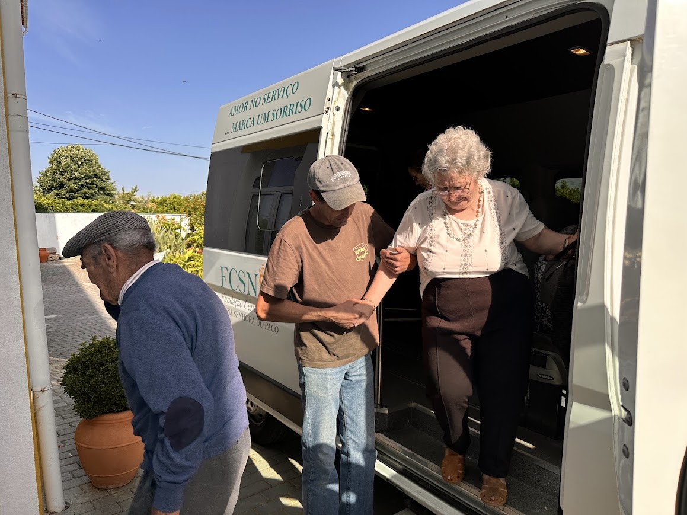
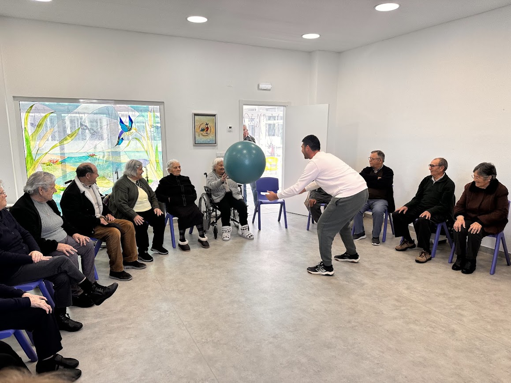
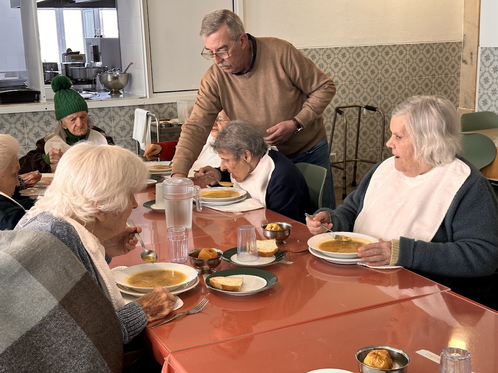
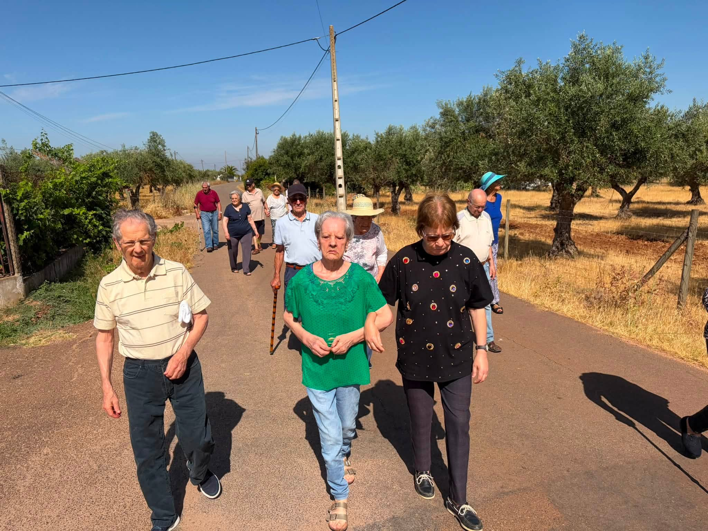
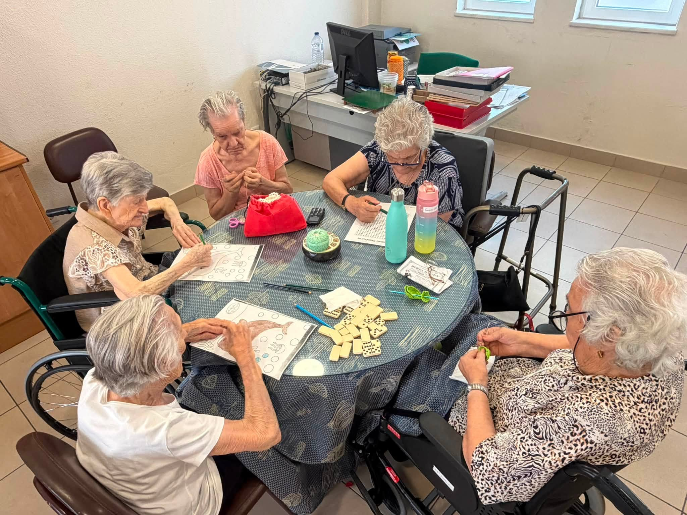
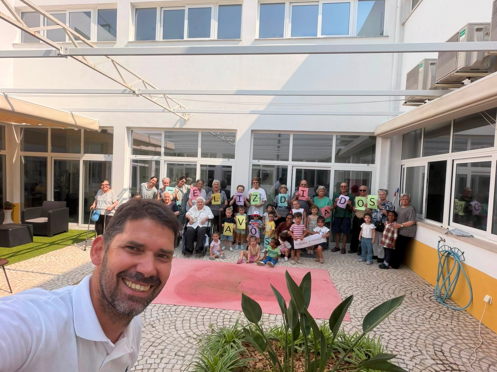

Conheça alguns dos espaços e momentos do nosso Centro de Dia.






Sobre o Centro de Dia
A resposta social Centro de Dia oferece aos seus utentes um conjunto de serviços que contribuem para a manutenção das pessoas no seu meio habitual de vida, promovendo a autonomia e prevenindo situações de dependência ou o seu agravamento.
Os utentes têm ainda a possibilidade de estabelecer novos relacionamentos e elos de ligação com o exterior, participando diariamente num ambiente de proximidade, convívio e segurança.
Para proporcionar uma resposta de qualidade às pessoas idosas, o Centro de Dia conta com uma equipa multidisciplinar, motivada e empenhada, que trabalha diariamente para promover o bem-estar físico, emocional e social de cada utente.
Objetivos
Promover a qualidade de vida.
Promover as relações interpessoais entre as pessoas idosas, bem como a convivência com as demais faixas etárias.
Contribuir para a estabilização ou retardamento do processo de envelhecimento.
Privilegiar a interação com a família, pessoas significativas e comunidade, procurando otimizar os níveis de atividade e participação social.
Promover estratégias de reforço da autoestima, valorização e autonomia pessoal e social, num ambiente agradável de lazer, convívio, cultura e formação.
Combater situações de isolamento e falta de apoio através de um conjunto diversificado de atividades.
Contacte-nos
Pretende obter mais informações sobre esta resposta social, esclarecer alguma dúvida ou agendar uma visita? Teremos todo o gosto em ajudá-lo.